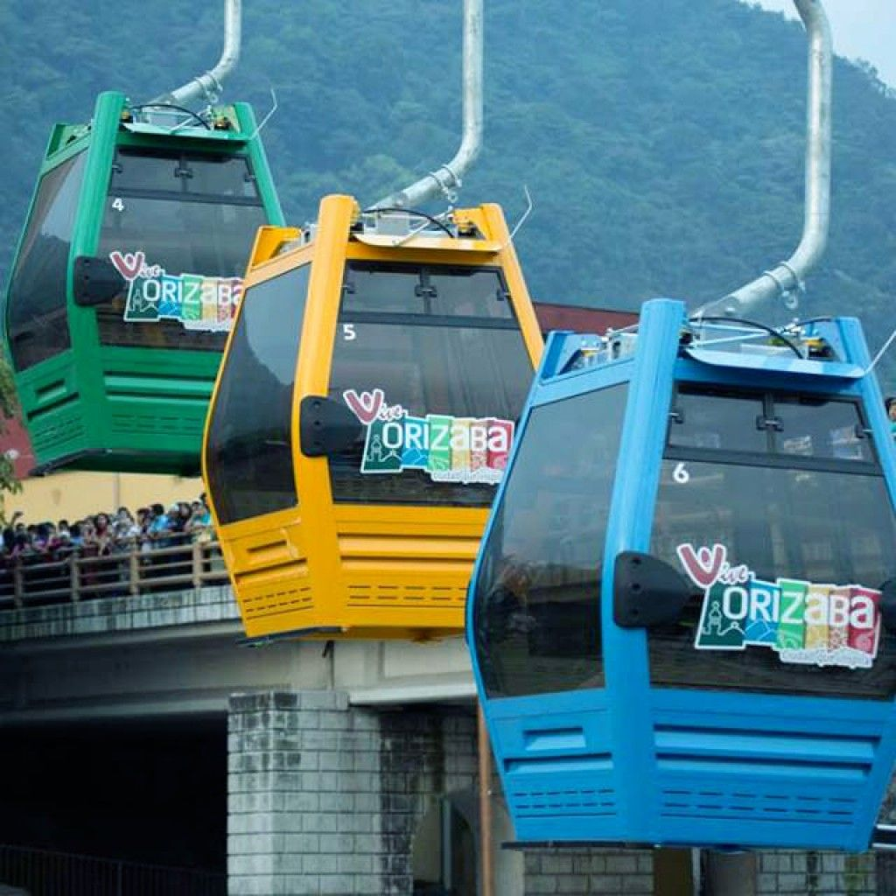
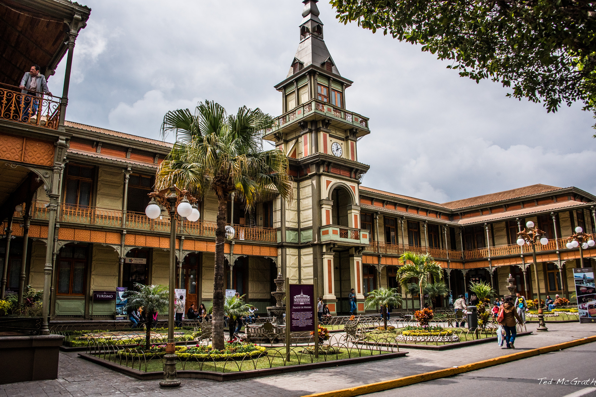
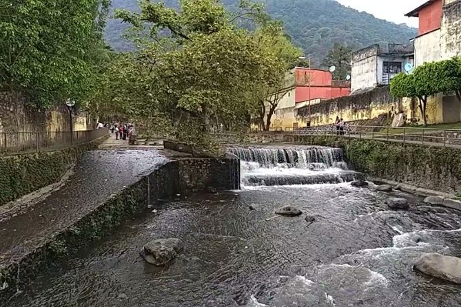

Descubre los mejores sitios turísticos
| Imagen | Nombre | Horario | Precio | Dirección |
|---|---|---|---|---|
|  | Teleférico de Orizaba | 9:00 AM - 6:00 PM | $50 MXN | Calle Sur 4, Centro |
|  | Palacio de Hierro | 10:00 AM - 7:00 PM | Entrada libre | Centro Histórico |
 |
Ecoparque Cerro del Borrego | 8:00 AM - 8:00 PM | Entrada libre | Cerro del Borrego |
|  | Paseo del Río Orizaba | Abierto todo el día | Entrada libre | Río Orizaba |